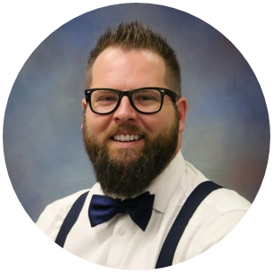

Dear CHS families,
My name is Mr. Johnston, and I'm excited to welcome your student to Fundamentals of Computer Science at Canutillo High School. I'm a 12th-year teacher, an Air Force veteran, a robotics coach who has taken student teams to the VEX World Championship, and a working software developer — I build real apps that schools use. This year my students will learn how the technology they use every day actually works — and how to build their own: games, animations, websites, and programs they design themselves.
An honest note before anything else: some students picked this class on purpose — welcome! Others may be looking at their schedule wondering how they ended up in a computer science class they never signed up for. Here's the story: I didn't replace a teacher. This is a brand-new position, created for the purpose of rebuilding the computer science program at CHS — and this course came together after classes were chosen last spring. So if your student didn't choose it — I get it, and I take it as my job, not theirs, to show them in the first weeks why this might turn out to be the most useful class they didn't ask for.
A few things to know:
- No computer needed yet. We spend the first days learning how our class runs, getting to know each other, and doing some surprisingly fun computer science — on paper. Student laptops come later.
- We write our classroom contract together. Each class period builds its own set of commitments — and I sign it too, with promises about what students can expect from me.
- Phones: Texas law now requires phones to stay off and put away during the school day. In our room that's simple: brains on, phones away.
You'll hear from me regularly this year through our class newsletter, The Loop — what we're learning, student work, and ways to talk about computer science at home. If you ever have a question or concern, please come to me first — I'd rather solve things together early.
Reach me: mjohnston@canutillo-isd.org — email is the fastest way to reach me, and I check it daily. My conference period is 5th period on "B" days (12:18–1:48).
One request: send me an email with anything you'd like me to know about your student — how they learn best, what they're into, anything at all. I read every reply.
Here's to a great year,
Mr. Johnston
Fundamentals of Computer Science · Canutillo High School · Room H120
Estimadas familias de CHS:
Me llamo Sr. Johnston y me da mucho gusto darle la bienvenida a su estudiante a la clase de Fundamentos de Ciencias de la Computación en Canutillo High School. Llevo 12 años como maestro; soy veterano de la Fuerza Aérea, entrenador de robótica que ha llevado equipos estudiantiles al Campeonato Mundial de VEX, y desarrollador de software — creo aplicaciones reales que usan las escuelas. Este año mis estudiantes aprenderán cómo funciona de verdad la tecnología que usan todos los días — y cómo crear la suya propia: juegos, animaciones, páginas web y programas diseñados por ellos mismos.
Una nota honesta antes que nada: algunos estudiantes eligieron esta clase a propósito — ¡bienvenidos! Otros quizás estén viendo su horario preguntándose cómo terminaron en una clase de computación que nunca escogieron. La historia es esta: no reemplacé a ningún maestro. Este es un puesto completamente nuevo, creado con el propósito de reconstruir el programa de ciencias de la computación en CHS — y este curso se formó después de que se eligieron las clases la primavera pasada. Así que si su estudiante no lo eligió — lo entiendo, y considero que es mi trabajo, no el suyo, demostrarle en las primeras semanas por qué esta podría resultar ser la clase más útil que nunca pidió.
Algunos puntos importantes:
- Todavía no se necesita computadora. Los primeros días los dedicamos a conocer cómo funciona nuestra clase, a conocernos entre nosotros, y a hacer ciencias de la computación sorprendentemente divertidas — en papel. Las laptops llegan después.
- Escribimos juntos nuestro contrato de clase. Cada período crea sus propios compromisos — y yo también lo firmo, con promesas sobre lo que los estudiantes pueden esperar de mí.
- Teléfonos: la ley de Texas ahora exige que los teléfonos permanezcan apagados y guardados durante el día escolar. En nuestro salón es simple: mente encendida, teléfono guardado.
Durante el año recibirán noticias mías regularmente a través del boletín de la clase, The Loop — lo que estamos aprendiendo, trabajos de los estudiantes y maneras de hablar de computación en casa. Si alguna vez tienen una pregunta o preocupación, por favor acudan a mí primero — prefiero resolver las cosas juntos y a tiempo.
Contacto: mjohnston@canutillo-isd.org — el correo electrónico es la manera más rápida de comunicarse conmigo, y lo reviso a diario. Mi período de conferencia es el 5.º período en días "B" (12:18–1:48).
Una petición: envíenme un correo con cualquier cosa que quieran que yo sepa sobre su estudiante — cómo aprende mejor, qué le interesa, lo que sea. Leo cada respuesta.
¡Que sea un gran año!
Sr. Johnston
Fundamentos de Ciencias de la Computación · Canutillo High School · Salón H120
Traducción asistida por inteligencia artificial. ¿Algo no quedó claro? Escríbame y con gusto lo aclaro.